内部绑定公网 IP
操作场景
内部绑定是指通过在云服务器内部添加一块可连接到公网网关的网卡的方式来绑定公网IP。
需要先申请一个内部绑定的公网 IP 并分配给云服务器，然后手动配置网卡 IP 地址及相关路由，以实现云服务器的公网访问。
说明：
目前内部绑定仅允许绑定到云服务器，不允许绑定到路由器与负载均衡器。
操作步骤
申请内部绑定的 IPv4 公网 IP
-
登录 WEB 控制台，在顶部菜单栏中点击产品与服务，选择 网络 > 公网 IP 。
-
在公网 IPv4 页面，点击申请。
-
填写公网 IP 信息。
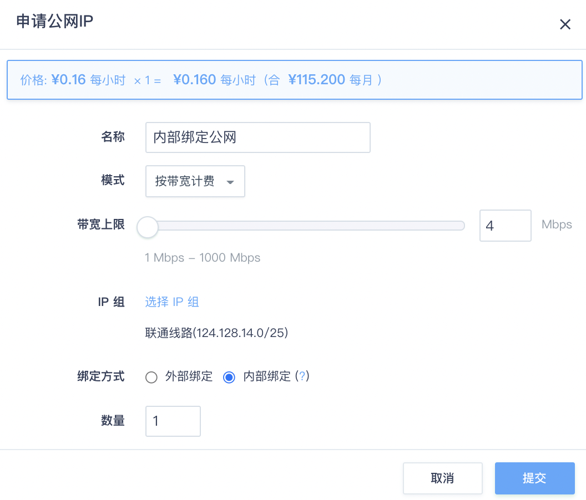-
名称：为您申请的 IP 地址取个名字，方便记忆与使用。可选。
-
模式：计费模式，可以选择按带宽计费或按流量计费。
-
IP 组：使用默认设置。
-
带宽上限：输入所需要的互联网带宽。
-
绑定方式：选择内部绑定。
-
数量：输入所需要的 IP 个数。
说明：
带宽上限是指云服务器互联网访问的带宽，云服务器与云服务器之间的内网带宽与云服务器规格有关，云服务器规格越高，内网带宽越高，详情请参阅 云服务器。
-
为云服务器绑定公网 IP
-
右键点击刚刚申请到的的 IPv4公网 IP， 选择分配到云服务器 ，在弹出的对话框中选择需要绑定的云服务器。
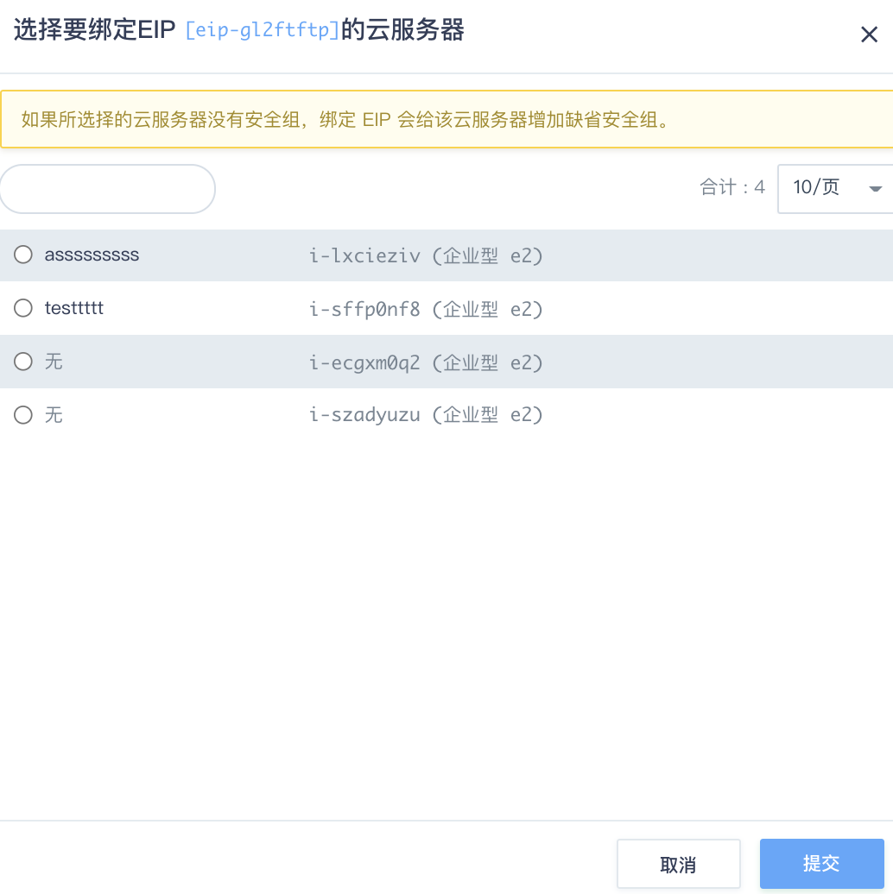 -
点击提交即可将申请到的公网 IP 绑定给相应云服务器。
说明：
内部绑定的公网 IP 目前只允许绑定到主网卡，并且不能与其他绑定到主网卡的公网 IP 同时存在。
Linux 云服务器网络配置
将公网 IP 分配到云服务器后可以看到云服务器内多出一块还未分配 IP 地址的公网网卡。如下图所示，此时云服务器中一共有两块网卡，其中 eth0 为主网卡， IP 地址为 192.168.0.2 ； eth1 为刚刚绑定的公网网卡。
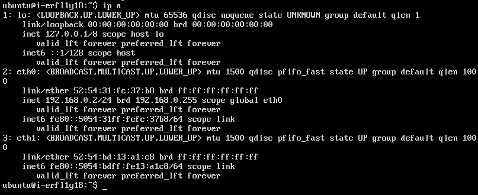
在以内部绑定方式绑定公网 IP 后，还需要手动为云服务器内的公网网卡进行网络配置，主要包括 IP 地址配置及路由配置。这里仅以 Ubuntu 为例来进行说明，其他系统的配置原理与此类似。
网络地址配置
假设刚才绑定的公网 IP 地址为 202.120.111.159 ，在配置文件 /etc/network/interfaces 中添加如下配置来将公网 IP 地址分配到 eth1 ：
auto eth1
iface eth1 inet static
address 202.120.111.159
netmask 255.255.255.0
将配置文件保存之后，使用如下命令将配置应用到网卡 eth1 ：
#sudo ifup eth1
说明：
如果云服务器中运行了NetworkManager服务，需要在进行上述配置后重启NetworkManager服务，以避免 eth1 的网络配置被擦除。
路由配置
为了让 eth1 可以正常访问公网，还需要进行路由配置。同样在配置文件 /etc/network/interfaces 中添加路由信息，使用 eth1 的网关做为默认路由，网关地址通常为该网段的第一个 IP 地址，添加路由信息后的完整配置如下：
auto eth1
iface eth1 inet static
address 202.120.111.159
netmask 255.255.255.0
post-up ip route replace default via 202.120.111.1 dev eth1
此时在云服务器中可以访问公网，但是对私有网络及基础网络的访问会出现问题，因此还需要在 eth0 上配置到私有网络及基础网络的路由。
系统中的基础网络地址为 10.0.0.0/8 ，并且假设用户创建的 VPC 网络地址为 192.168.0.0/16 。在配置文件中添加如下配置，将对这些网络的访问的下一跳设置成 eth0 所在网络的网关（默认 IP 地址为 192.168.0.1 ）：
auto eth0
iface eth0 inet dhcp
post-up ip route replace 192.168.0.0/16 via 192.168.0.1 dev eth0
post-up ip route replace 10.0.0.0/8 via 192.168.0.1 dev eth0
说明：
如需在 Ubuntu Server 16.04.2 LTS 版本中进行网络配置，还需要在 /etc/network/interfaces 文件中将以下语句进行注释:
source /etc/network/interfaces.d/*。
内网 DNS 路由配置
为了访问内网域名地址，需要再添加一条内网 DNS 的路由信息。内网 DNS 服务器的 IP 地址可以在 /etc/resolv.conf 文件中查看，其中以 100 开头的 IP 地址为内网的 DNS 服务器地址，如下图所示：
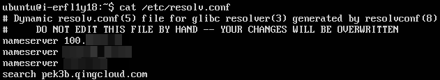
假设 DNS 服务器地址为 100.3.3.3 ，将该 IP 地址的路由信息添加到 eth0 网卡对应的配置信息下，如下所示：
post-up ip route replace 100.3.3.3/32 via 192.168.0.1 dev eth0
公网 IP 切换绑定
公网 IP 切换绑定功能适用于绑定已经处于绑定状态的公网 IP 到新的虚拟机上。工作原理是: 从源节点上解绑公网 IP，同时在目标节点上进行绑定。
公网 IP 绑定功能可以使用在高可用环境中。一旦绑定公网 IP 的主节点出现宕机或者服务无法使用，可以在从节点中发起切换绑定的请求，这样从节点上会绑定之前主节点使用的公网 IP 。这样的使用可以保证服务不宕机。具体的 api 使用方法可以参考 AssociateEip。
-
在同一个 VPC 中创建两台虚拟机, VPC 绑定公网 IP A, 另外对外服务的虚拟机绑定公网 IP B。在防火墙中放行 VRRP 协议。
-
虚拟机上安装配置 keepalived。
以 keepalived 1.3.9 版本为例：
主节点配置如下：
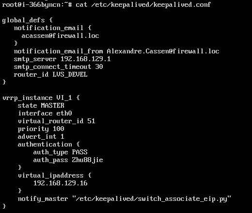
从节点配置如下：
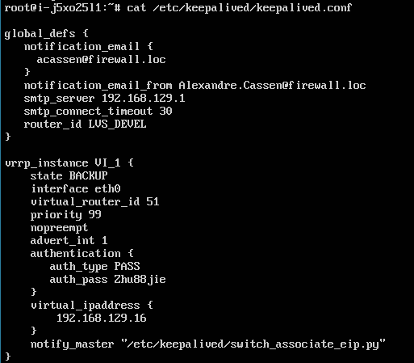
同时运行之后, EIP B 会绑定在主节点上。可到 console 页面查看。
-
关闭主节点的 keepalived 服务，触发主备切换，此时公网 EIP B 会绑定到新的主节点上。
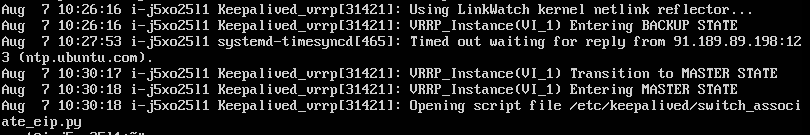
Windows 云服务器网络配置
这里仍然假设绑定的公网 IP 地址为 202.120.111.159 ，网关为 202.120.111.1 ； 用户创建的 VPC 网络地址为 192.168.0.0/16 ，云服务器在私有网络中的 IP 地址为 192.168.0.2 ，网关为 192.168.0.1 。以 Windows Server 2016 为例来说明网络配置的步骤。
网络地址配置
为新加入的公网网卡配置 IP 地址，如下图所示。其中，只需要配置 IP 地址及子网掩码，不需要配置网关地址， DNS 地址也可不填。在配置完成后，点击确认保存。
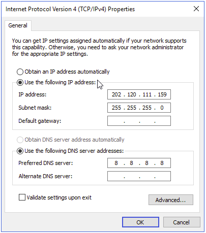
路由配置
打开 Windows 命令行终端进行路由配置。首先使用 route 命令查看网卡的编号：
route print -4
输出结果如下图所示，其中第一行与第二行分别为私有网络的网络连接与公网的网络连接，每行的第一个数字为网卡的编号。在本示例中，私有网络的网卡编号为 4 ，公网的网卡编号为 6 。
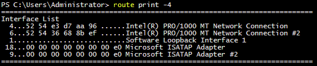
使用如下命令添加路由信息，使用公网网卡的网关做为默认路由，其中 if 指定的参数为公网网卡编号 6 ：
route -p add 0.0.0.0 mask 0.0.0.0 202.120.111.1 metric 1 if 6
使用如下命令添加私有网络及基础网络的路由信息，其中 if 指定为私有网络的网卡编号 4 ：
route -p add 192.168.0.0 mask 255.255.0.0 192.168.0.1 metric 1 if 4
route -p add 10.0.0.0 mask 255.0.0.0 192.168.0.1 metric 1 if 4
最后需要修改私有网络默认路由的优先级，以保证对于公网的访问使用公网网卡的默认路由：
route -p change 0.0.0.0 mask 0.0.0.0 192.168.0.1 metric 100 if 4
在配置完成后使用 route print -4 查看完整的路由信息，如下图所示：
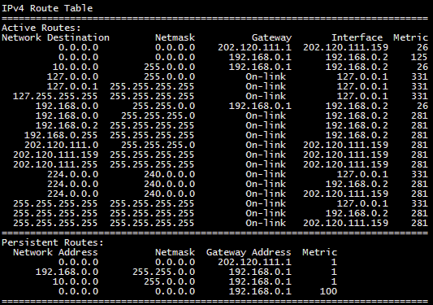
内网 DNS 路由配置
首先在网卡详细信息页面中查看 DNS 服务器的 IP 地址，如下图所示，其中以 100 开头的 IP 地址为内网的 DNS 服务器地址：
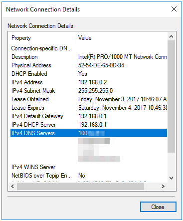
假设 DNS 服务器地址为 100.3.3.3 ，添加路由信息，指定 if 为私有网络的网卡编号 4 ：
route -p add 100.3.3.3 mask 255.255.255.255 192.168.0.1 metric 1 if 4
基础网络中云服务器的网络配置
以上示例中假设用户云服务器加入到了 VPC 网络，并以 192.168.0.1 做为访问内网资源的网关。如果用户云服务器加入的是基础网络，则需要将上述配置中的 192.168.0.1 修改为基础网络的网关地址，网关地址通常为该网段的第一个 IP 地址。
例如用户云服务器加入基础网络后的 IP 地址为 10.140.10.15 ，则网关地址为 10.140.10.1 ，并以此 IP 地址做为访问内网资源的网关地址来进行网络配置。
防火墙设置
由于内部绑定的公网 IP 是绑定到云服务器的主网卡上，因此对主网卡应用的防火墙规则都会被应用到公网网卡。当删除主网卡的防火墙时，公网网卡的防火墙也会被同时删除。